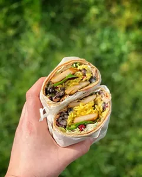

Home
Chicken Burritos

Description
A classic Mexican-inspired dish filled with savory, juicy chicken,
seasoned rice, black beans, and topped with salsa and cheese. Perfect for
a hearty meal!
Ingredients
- For the chicken:
- 2 boneless, skinless chicken breasts
- 1 tablespoon olive oil
- 1 teaspoon cumin
- 1 teaspoon chili powder
- 1 teaspoon garlic powder
- Salt and pepper to taste
- Juice of 1 lime
- For the burritos:
- 4 large flour tortillas
- 1 cup cooked rice (preferably seasoned with lime and
cilantro)
- 1 can (15 oz) black beans, drained and rinsed
- 1 cup shredded cheddar cheese
- 1/2 cup sour cream
- 1/2 cup salsa or pico de gallo
- 1/4 cup fresh cilantro, chopped (optional)
Steps
- Prepare the chicken:
- In a skillet over medium heat, heat
the olive oil.
- Season the chicken breasts with cumin, chili powder, garlic
powder, salt, and pepper.
- Cook the chicken for 6-7 minutes on each side until golden brown
and cooked through.
- Let the chicken rest for a few minutes before slicing it into
strips.
- Prepare the burritos:
- Warm the flour tortillas in a dry skillet for about 30 seconds on
each side.
- On each tortilla, layer the rice, black beans, sliced chicken,
shredded cheese, sour cream, salsa, and fresh cilantro.
- Fold in the sides of the tortilla and then roll it up tightly from
the bottom to enclose all the fillings.
- Slice in half and serve!